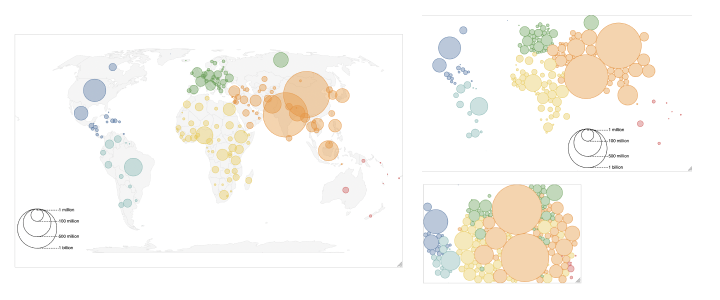
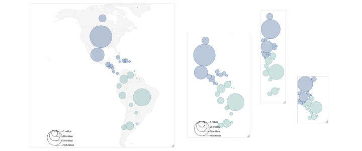
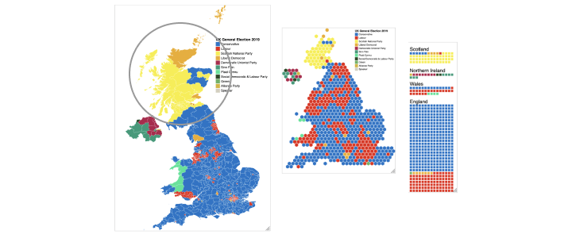

Please use a recent version of Chrome or Firefox to view these visualizations, otherwise they may not display correctly.
Demo #1: World PopulationDemo #2: Population of the AmericasDemo #3: UK General Election 2019Demo #4: UK General Election 2019 (focus on Scotland)